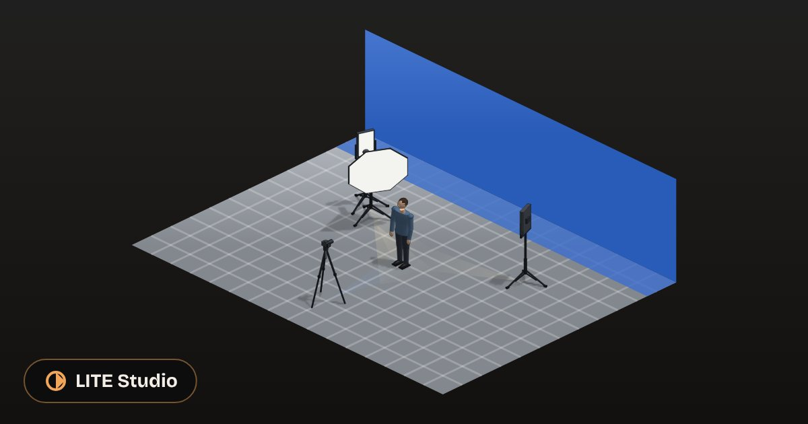
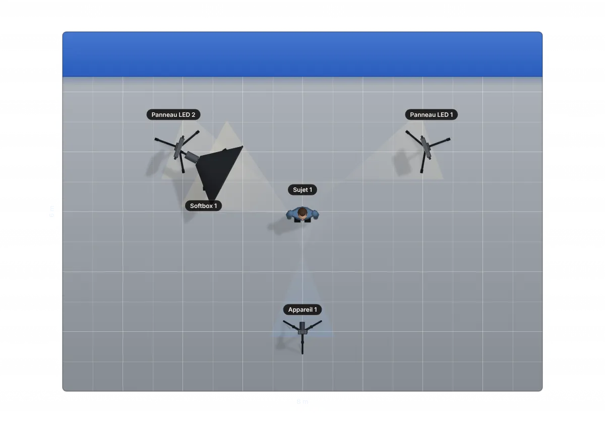

Chroma Pop
Cámara Trípode estándar, Softbox Octa 120 y Panel LED 1 x 2
- 5 elementos
- Creativo
- Estudio de 8 × 6 m


Material 4
Captura
- 1 ×Cámara Trípode estándar70 x 86 cm
Luces
- 1 ×Softbox Octa 120
- 2 ×Panel LED 1 x 230 x 60 cm
Abre el preset para mover el material, medir las distancias e imprimir la hoja de plató.